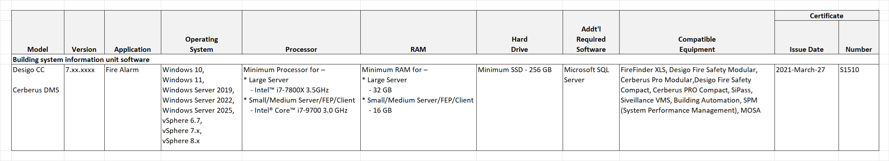

Off-the-Shelf Computer Management Stations Requirements
UL Approval
|

UL 60950/UL 62368-listed Computer Specifications
UL 60950/UL 62368-listed Building System Information Unit (BSIU) computers can be used in Desigo CC fire systems according to the following requirements.
BSIU Computer Minimum Requirements | |||
System Size: | Large Server | Small/Medium Server/FEP | Client |
Minimum CPU | Intel™ i7-7800X 3.5GHz | Intel® Core™ i7-9700 3.0 GHz | Intel® Core™ i7-9700 3.0 GHz |
Minimum HDD/SSD | 256 GB | 256 GB | 256 GB |
Minimum RAM | 32 GB | 16 GB | 16 GB |
Minimum Display | 1 monitor | 1 monitor | 1 monitor |
UI | Keyboard / mouse | Keyboard / mouse | Keyboard / mouse |
I/O | 0-4 internal USB 2.0 headers (*) | 0-4 internal USB 2.0 headers (*) | None |
Required listing for BSIU | UL60950-1 (Standard for Information Technology – Safety – Part 1: General Requirements) or | ||
Power input source | The source of power for the BSIU equipment shall be within the rated range of the BSIU. | ||
(*) One USB 2.0 header is required for each SNC card to be installed. | |||
Regarding system size, please apply the following criteria:
- Small /Medium systems - Up to 50,000 system objects
- Large systems - From 50,000 to 150,000 system objects
Supported Operating System on the Setup type - Server, FEP, and Client:
- Microsoft Windows 11 64-bit
- Microsoft Windows Server 2022 64-bit
- Microsoft Windows Server 2025 64-bit
NOTE: Interconnecting wiring between a stationary computer and the computer's keyboard, video monitor, touch screen, or mouse-type device should not exceed 8 ft.
BSIU Virtual Machine Host Minimum Requirements | |
Supported Operating System | VMware VSphere 6.x, VMware VSphere 7.x, VMWare VSphere 8.x |
Minimum CPU | Intel™ i7-7800X 3.5GHz |
Minimum HDD/SSD | 1 TB |
Minimum RAM | 64 GB |
Minimum Display | 1 monitor |
UI | Keyboard / mouse |
I/O | 0-4 internal USB 2.0 headers (*) |
Required listing for BSIU | UL60950-1 (Standard for Information Technology – Safety – Part 1: General Requirements) or |
Power input source | The source of power for the BSIU equipment shall be within the rated range of the BSIU. |
(*) One USB 2.0 header is required for each SNC card to be installed. | |
Compatible Panels
- FireFinder XLS, Desigo Fire Safety Modular, Cerberus PRO Modular, Desigo Fire Safety Compact, and Cerberus PRO Compact panel networks may be connected to BSIU-based Management Stations
- GCNET (VNT) configurations are not supported
- WAN configurations are supported for Monitoring Only operations.
Network Infrastructure
- Network switches must be UL60950-1, UL62368-1, or UL864 listed.
- The communication path from the BSIU to the fire network must meet the same requirements described in the fire system architectures.
Installation Requirements
- For each panel network, a panel with control must be co-located with each BSIU which allows control of the panel network.
- (Recommended) The BIOS boot options of the BSIU stations should be set to Auto-Restart after a power outage.
Procedures vary depending on the BIOS manufacturer. For detailed instructions, refer to the BIOS user manual.
Restrictions
- The BSIU cannot perform any Fire controls which cannot be performed on the co-located panel.
- No software other than Desigo CC, anti-virus software, and security software may be installed on the BSIU.